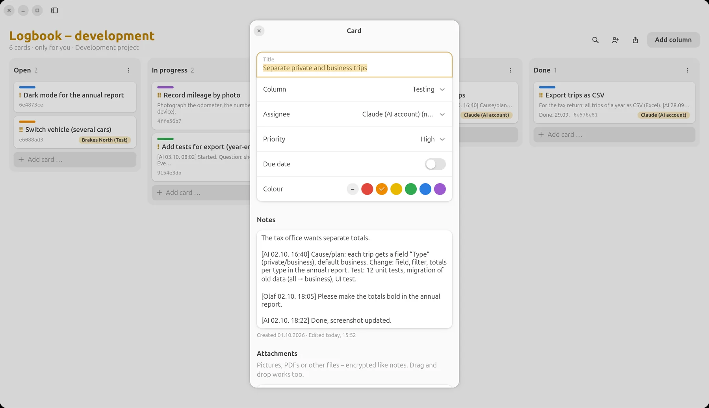
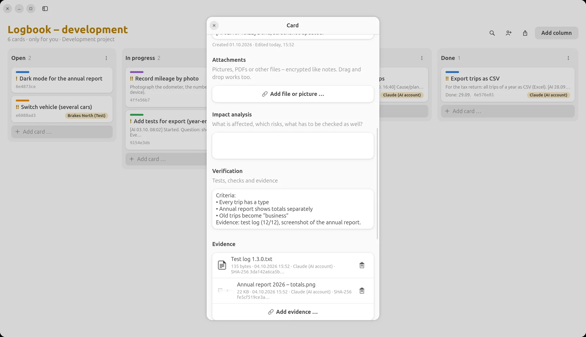
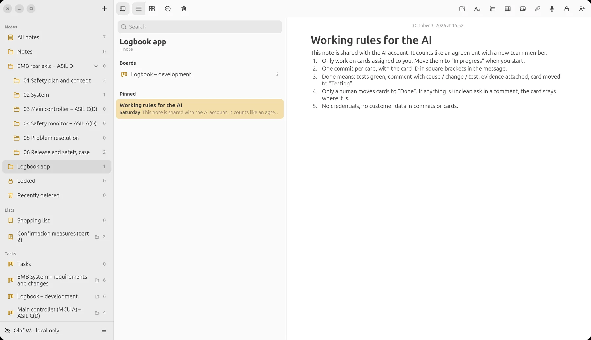
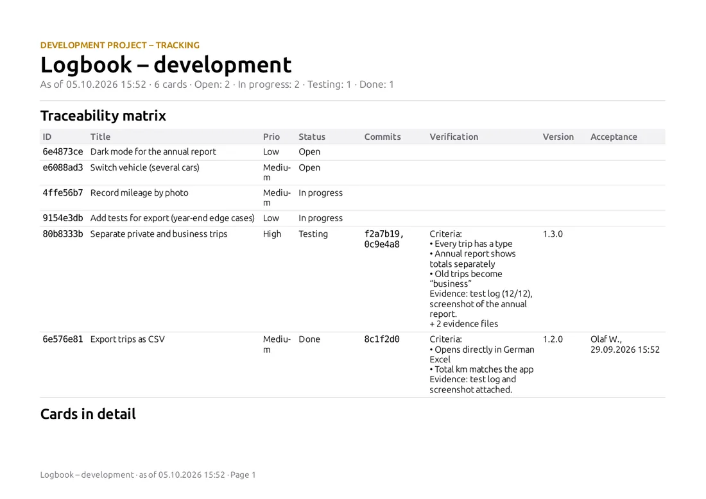
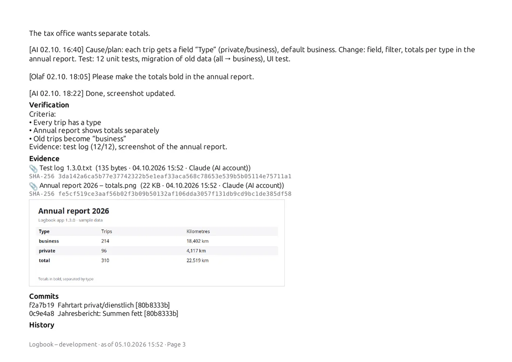

LiNotes
LiNotesAI on the Team
at the Kanban Board
Write a card, assign it, check the result: with LiNotes you work with an AI like with a colleague. It gets tasks on the Kanban board, asks questions, delivers commits, test logs and screenshots. And you decide what is done.

Example: a small vehicle logbook app. Names and content are made up, the pictures show the real LiNotes app.
First things first
There is no AI in LiNotes.
Installing LiNotes installs none.
The app and the server contain no AI code, no AI connection and no data sharing. There is nothing to switch on and nothing reading along in the background.
- An AI only joins if you invite it, just like a new colleague: with an invitation code it gets an account of its own on your server.
- It only sees what you share with it: a single board, a note. Everything else stays encrypted and invisible to it.
- You can uninvite it at any time: stop sharing or delete its account, as with any person.
- To be honest: what you share with an AI is decrypted on the computer it works on and processed by the AI’s provider. So only share with it what you would also show an external developer.
Workflow
The board is
the interface.
No chat history that gets lost: task, questions, result and evidence are on the card, for you, your team and later in the report.
- You write the card.What should happen, why, how will you recognise “done”? The “Verification” field records the criteria. Then you assign the card to the AI account.
- The AI picks up the card.It reads its assigned cards and moves the first one to “In progress”. The history shows that it was the AI, and when.
- Questions end up on the card.If something is unclear, the AI asks in a comment and waits. You answer there, from your phone too.
- Every commit names the card ID.LiNotes links the commits to the card automatically. You see which code belongs to which task.
- Done means: proven.The AI comments on cause, change and test, attaches the test log and screenshots as evidence (with checksum) and moves the card to “Testing”.
- You accept.Only a human moves cards to “Done”. If something is not right, you write it on the card. The AI reworks it.


Left: the AI’s plan, your change request and its answer, all on the card. Right: criteria and the evidence the AI attached.
Three ways of working
Alone, in a team
or as a tester.
Alone with the AI
You are product owner and reviewer at the same time: you write the cards, the AI implements, you check and accept. The board is your memory, even long after the session with the AI is over.
AI as a developer on the team
The AI account is one person among several: Lena takes the photo recognition, the AI the CSV export. Same rules for everyone: responsibility, commits with card ID, acceptance by the team lead.
AI as a tester
The AI gets test cards: find edge cases, write tests, document test runs. It files bugs as new cards. Developers of flesh and blood fix them.
The working rules
sit next to it as a note.
Just like with a new colleague: a shared note describes how the project works, including which cards the AI may take, what “done” means, what is off-limits. The AI reads it before every task.

And in the end:
the report.
Who did what when, with which commit, proven by which evidence? The traceability matrix shows humans and AI alike, traceable for customers, auditors or yourself in a year’s time.


Guide
How the AI joins
your team.
You need a LiNotes server (guide) and an AI that can run commands on a computer, for example an AI coding assistant in the terminal.
- Create a board and run it as a development project.Right-click the board (Android: long-press) → “Run as development project”. Columns for example: Open · In progress · Testing · Done.
- Create an invitation code.Account menu → “Create invitation code …” (Android: Settings → People and invitations). Just like for a new colleague.
- Create the AI account: on the AI’s computer, not in your app.The AI uses the command-line tool from the LiNotes source code for this:
python3 tools/linotes-cli.py register https://your-server.example <invitation code> ai "AI assistant". The tool is not part of the app installation. People who use LiNotes do not have it on their computer. - Verify.As with any person: the AI shows a six-digit code with
verify-show, and you type it into LiNotes. Only then can anything be shared. So nobody can slip in a false key. - Share only the board in question.People icon in the board → choose the AI account. Plus the note with the working rules. The AI sees nothing more.
- Write and assign cards.From now on you work at the board: the AI reads with
board, moves withmove, comments withcomment, links commits withtrace-commitsand attaches evidence withevidence. - Accept and uninvite when needed.You check in “Testing” and move to “Done”. When the project is over: stop sharing; the server operator can remove the account completely with
admin delete.
Control
You keep your hand
on the board.
End-to-end
The same applies to the AI account: the server only sees encrypted data. Only what is shared with it is decrypted, on its computer.
Only what is shared
Your notes, lists, plans and other boards stay invisible to the AI, technically, not just by a setting.
Acceptance by humans
The rule “only a human moves cards to Done” is in the working rules; the history shows at any time who moved what.
Every trace visible
Comments, status changes, commits and evidence from the AI carry its name and the time.
Uninvite at any time
Stopping sharing is enough. From then on it receives no more changes.
From practice
LiNotes, Prevux and LiBoard themselves are made exactly like this: with cards, commits with card IDs, evidence and acceptance by a human.
Try it yourself.
LiNotes is free and open source, with your own server or locally without a server.